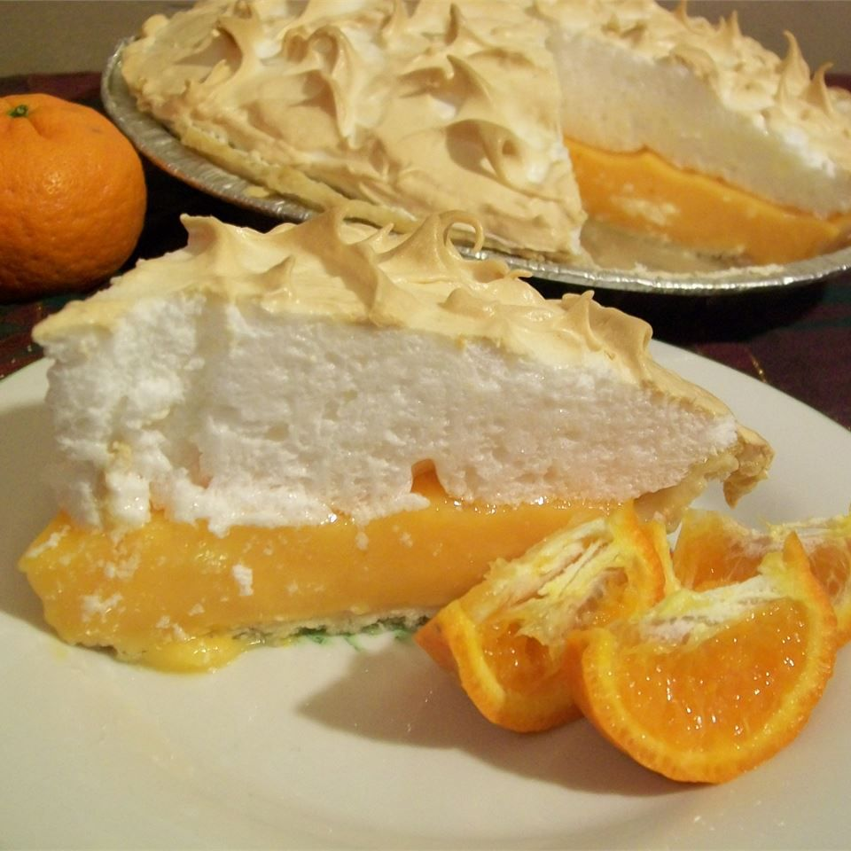

Home
Orange Meringue Pie

Description
This Orange Meringue Pie is super simple and packed with fresh, zesty flavor. Using a store-bought pie crust
cuts down on prep time, and the filling comes together fast with just a handful of ingredients-orange juice, lemon juice, eggs,
and a few pantry staples. Just twenty minutes of prep and a thirty minute bake time, you can be enjoying this delicious pie
within the hour. The citrus filling is smooth and refreshing, perfectly balanced between sweet and tart, and the fluffy
meringue topping adds a light, airy finish. It's great for spring and summer gatherings or anytime you want a quick dessert
that feels a little fancy without all the effort.
Ingredients
- 1 (9 inch) unbaked pie crust
- 3/4 cup sugar
- 1/3 cup cornstarch
- 1 pinch salt
- 1 cup orange juice
- 1/2 cup lemon juice
- 1/4 cup water
- 4 eggs, separated
- 4 tablespoons butter or margarine, cut into pieces
- 2 teaspoons grated orange zest
- 1/2 cup diced orange segments
- 1/2 cup white sugar
- 1/4 teaspoon cream of tartar
Steps
- Preheat oven to 400 degrees F (205 degrees C). Line pastry with aluminum foil and a layer of pie weights.
Bake in the preheated oven until edge of crust is golden, roughly 10 minutes. Carefully remove foil and weights.
Bake an additional 5 minutes.
- In a small saucepan, stir together the 3/4 cup sugar, 1/3 cup cornstarch, and salt. Stir in orange juice, lemon juice,
and water. Whisk in egg yolks. Cook over medium heat, stirring frequently, until thick and bubbly, around 5 minutes.
Remove from heat, stir in butter and orange zest. Optionally, stir in diced orange segmetns. Pour into pie crust,
cover with plastic wrap, and set aside to cool.
- When pie filling is cooled to room temperature, preheat oven to 350 degrees F (175 degrees C), and begin preparing
meringue. In a large glass or metal bowl, beat egg whites until foamy. Slowly add 1/2 cup sugar and cream of tartar,
continue to beat until stiff peaks form. Lift your whisk straight up: egg whites hsould form a sharp peak that holds
its shape. Spread over pie, making sure to compleltely cover the filling and meet the edge of the crust.
- Finally, Bake in preheated oven until meringue topping is golden brown, around 15 minutes. Cool and enjoy.